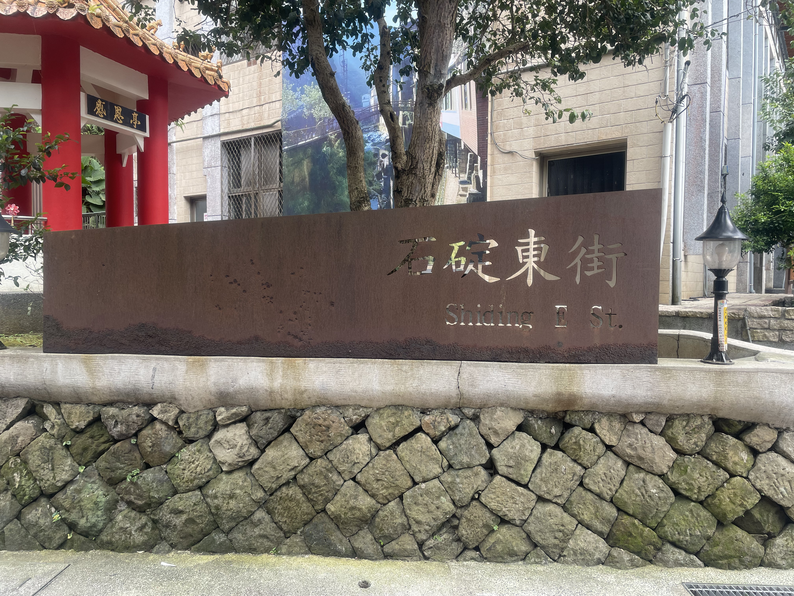
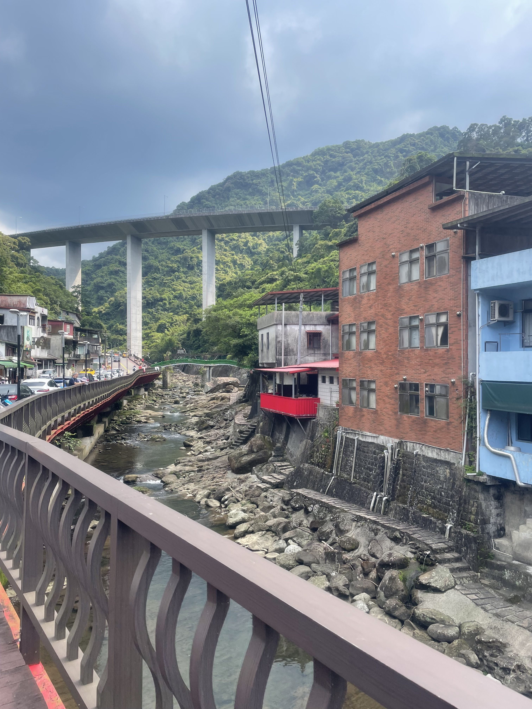
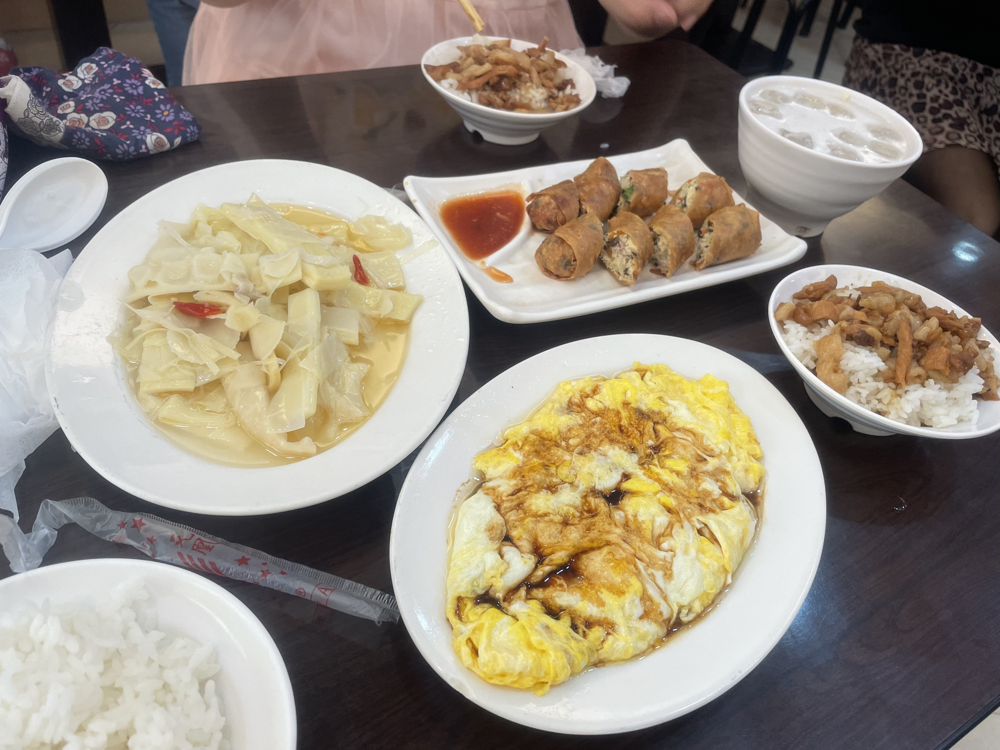
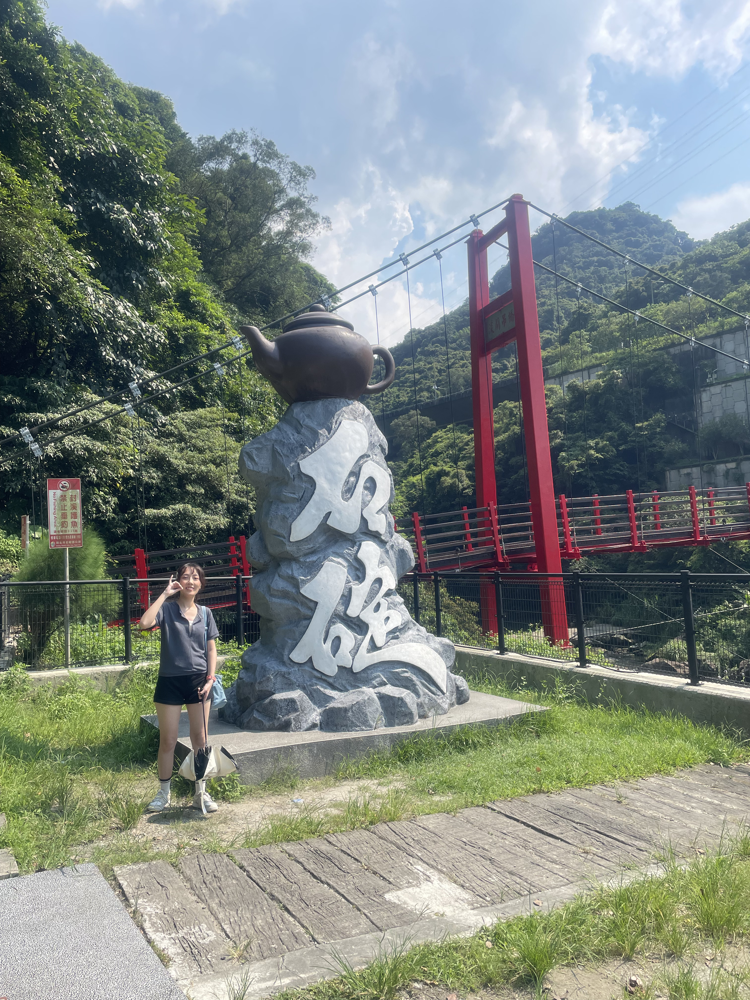
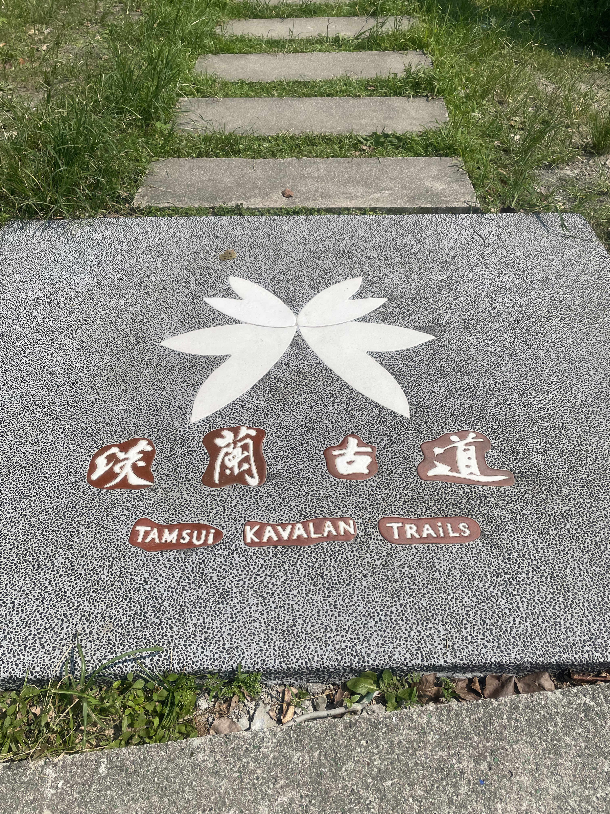
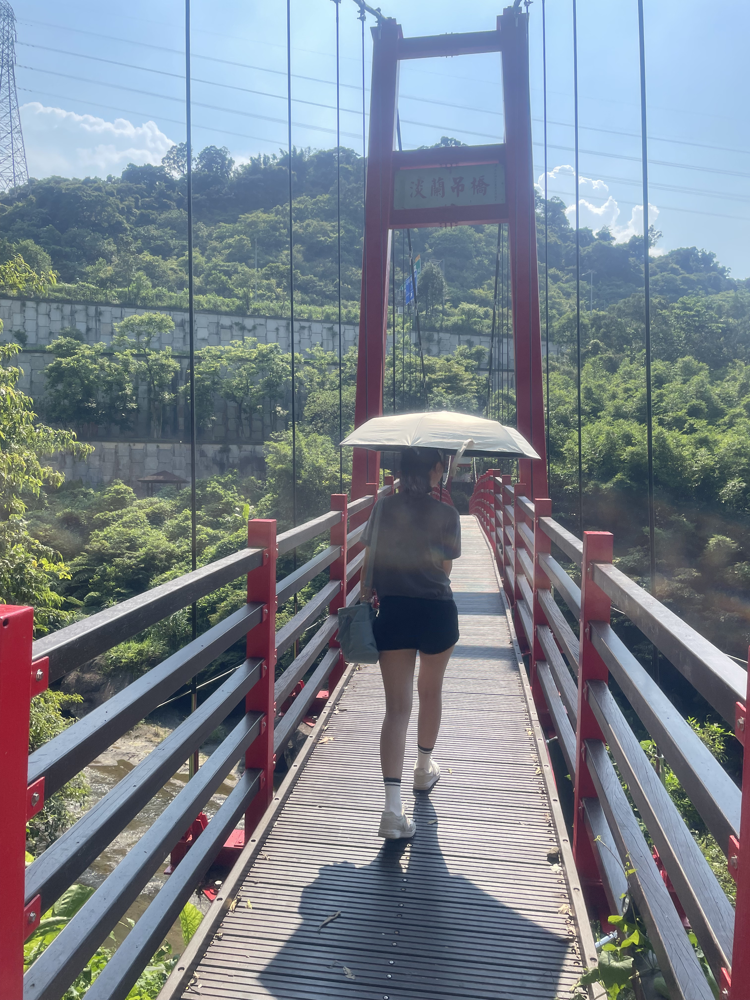

新北市石碇區
基本資訊
位於新北市東北部，地處山區，東鄰宜蘭縣，北接平溪區，西鄰深坑區與汐止區。石碇區地形多山丘與溪谷，保有豐富的自然景觀與鄉村風貌，是新北市中自然環境保存最完整的行政區之一。 石碇歷史上以農業及木材產業為主，尤其以傳統豆腐與竹筍聞名，保留了濃厚的山區鄉村文化。區內聚落多沿著溪谷或山路而建，街道曲折，建築以低矮平房為主，呈現典型的山區生活風貌。 交通方面，石碇區主要以台九線（北宜公路）及區內產業道路與台北市區及宜蘭連結，雖距市中心較遠，但景觀及生態環境完整，吸引喜愛山林及休閒旅遊的人群。
推薦景點
| 石碇老街
是典型的山區聚落街道，沿著北宜公路旁溪谷而建。老街保存早期山區村落的建築風貌，以矮房屋、石板路與傳統店鋪為主，展現濃厚的鄉村氛圍。 街區內以在地小吃、手工豆腐店及茶葉店最具特色，石碇以豆腐料理聞名，遊客可品嚐豆腐冰、豆腐乳及各式創意豆腐料理，感受當地農產文化的魅力。沿街也可看到部分傳統建築與老樹，映襯溪谷與山林景觀，呈現自然與人文融合的氛圍。
| 淡蘭吊橋
是橫跨當地溪谷的重要景觀吊橋，也是遊客親近自然與體驗山區景觀的熱門地點。吊橋沿線景色優美，兩側被青山與溪流環繞，步行其上可感受到山谷的空氣與自然氛圍，特別在春夏季節，綠意盎然，秋冬則有不同的山林色彩。 淡蘭吊橋結構穩固，設計兼顧安全與觀景功能，適合一般遊客及親子同行。橋上常可俯瞰溪流蜿蜒與周邊茶園或山林景觀，形成兼具休閒、健行與攝影的景點。





